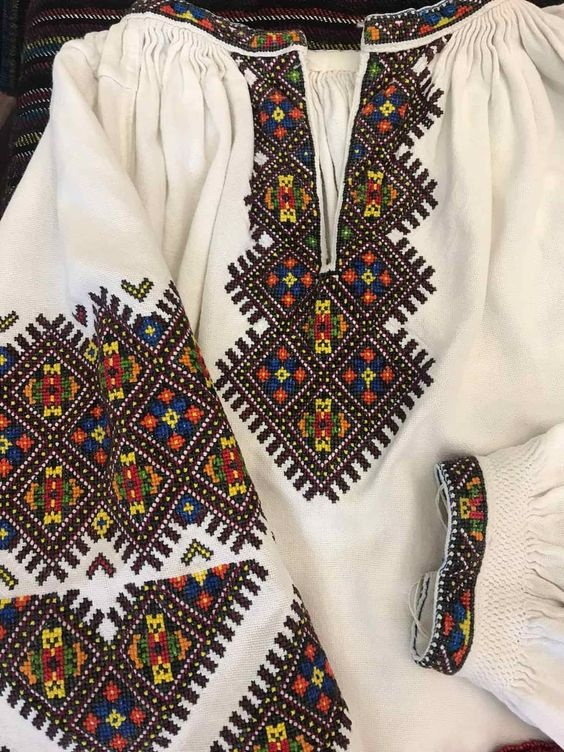
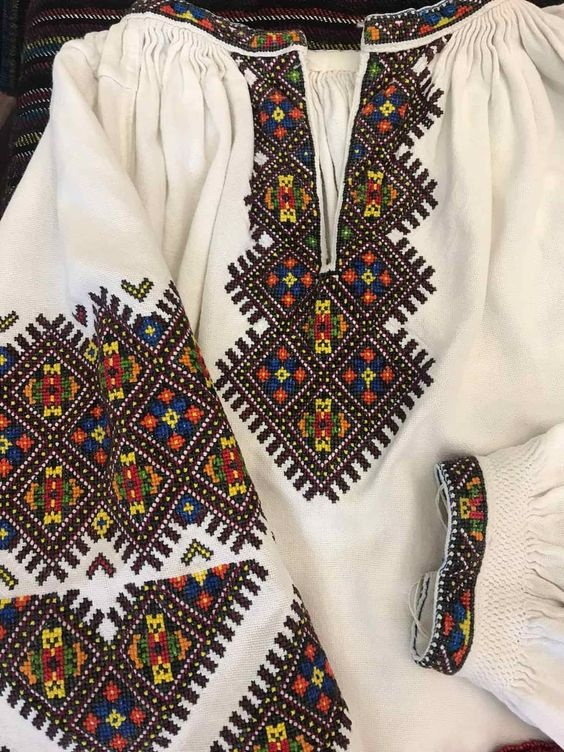

Що таке вишиванка?
Вишиванка — це не просто елемент одягу, а духовний символ українського народу. Вона уособлює історію, традиції та світогляд нашого народу, є відображенням його душі та внутрішньої краси. Кожен візерунок, колір і стібок мають глибокий зміст, закодоване послання від поколінь предків.
Вишиванка слугувала не лише прикрасою, а й оберегом, що захищав людину від злих сил і приносив удачу. У візерунках відображалися природні елементи, символи родючості, любові, добробуту та єдності з рідною землею. Традиційно вишивку наносили вручну, вкладаючи у кожен стібок частинку серця, віри та любові.
Сьогодні вишиванка стала символом національної гідності та патріотизму. Її носять не лише у свята, а й у повсякденному житті — як прояв любові до України, поваги до своїх коренів та незламного духу. Одягаючи вишиванку, українці демонструють єдність, силу та неперервність своєї культури, що пережила століття випробувань і залишається живою донині.
"Вишиванка — це не мода. Це серце, вишите на полотні."
Історія вишиванки
Перші згадки про українську вишивку сягають часів Київської Русі, коли вишиті орнаменти прикрашали одяг князів, воїнів і простолюду. Візерунки тоді виконували не лише декоративну функцію — вони мали сакральне значення та служили оберегами від злих сил.
У XIX–XX століттях вишиванка стала символом національного відродження та духовної єдності українців. У цей період кожен регіон виробив власні особливості вишивки — від кольорів і техніки до орнаментів, які відображали місцеву природу, традиції та світогляд.
Під час радянської доби вишиванка залишалася потужним знаком української ідентичності, хоч її носіння часто обмежували. Саме тоді вона перетворилася на символ внутрішньої свободи, любові до рідного краю та опору русифікації.
Після відновлення незалежності України в 1991 році інтерес до традиційного вбрання значно зріс. Вишиванка почала поєднувати давні техніки з сучасною модою — її носять не лише на свята, а й у повсякденному житті, як прояв гордості за свій народ і культуру.
Сьогодні вишиванка — це не просто елемент національного костюма, а живий символ єдності, гідності та неперервності української традиції. Вона продовжує розповідати історію нашого народу мовою кольорів, узорів і поколінь.
Вишиванка у сучасній культурі
Сьогодні вишиванка стала елементом не лише традиційного костюма, але й сучасної моди. Українські дизайнери — зокрема Юлія Магдич і Віта Кін — застосовують традиційні мотиви в сучасному одязі і показують колекції на міжнародних платформах.
Свято День вишиванки відзначається щорічно у третій четвер травня. Ідея зародилась у 2006 році як флешмоб серед студентів. У святкуванні беруть участь не лише Україна, але й українські громади за кордоном.
Вишиванка також використовується як спосіб збереження культурної ідентичності серед українців за кордоном. Наприклад, у багатьох країнах діаспори проводять паради та флешмоби, присвячені вишиванці.


 
